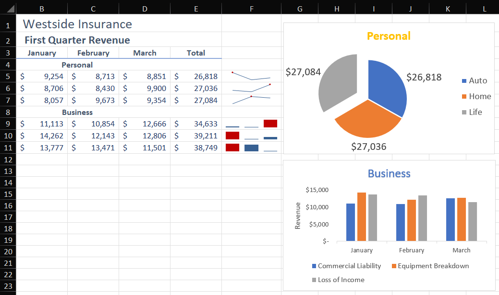
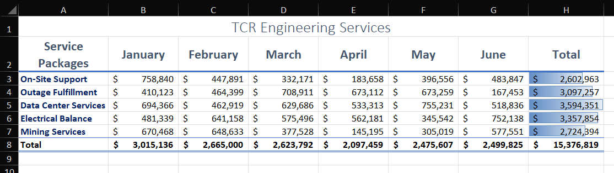
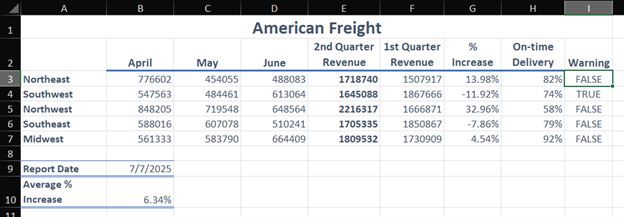

This course focuses on mastering Excel as an analytical tool and a standard for professional communication. It’s designed to transform spreadsheets into actionable documents. I learned much of the technical side of Excel, including advanced formulas, trend analysis, and conditional formatting.
Explored a range of printing features, page setups, and worksheet modifications to ensure documents are professional and ready for review.
Investigating data trends through the creation of graphical models and practicing calculations using multi-step Boolean logic.
Managing data sizes, styles, and alignments while utilizing conditional highlighting to draw attention to critical performance data points.
Utilized a pie chart, clustered column chart, and sparklines for effective data visualization with professional formatting.

Managed a multi-month service package dataset, implementing in-cell data visuals to detail totals.

Utilized Boolean logic to return TRUE/FALSE performance-based flags. Calculated quarter-over-quarter percentage increases and established average growth metrics using specialized functions.

← Return to Academics